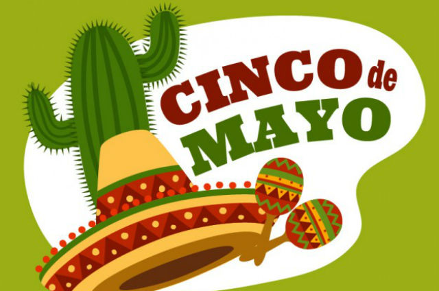
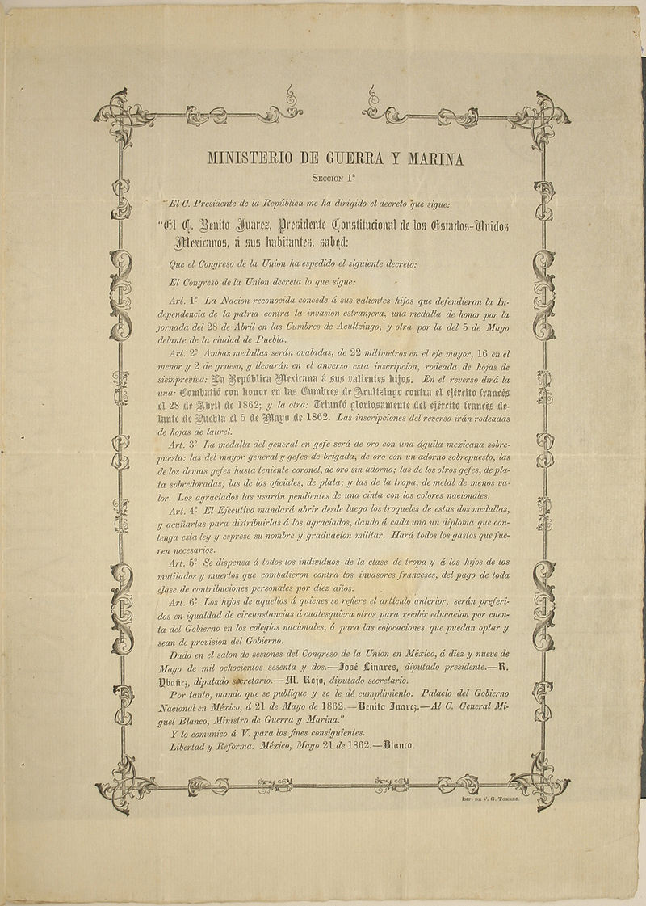
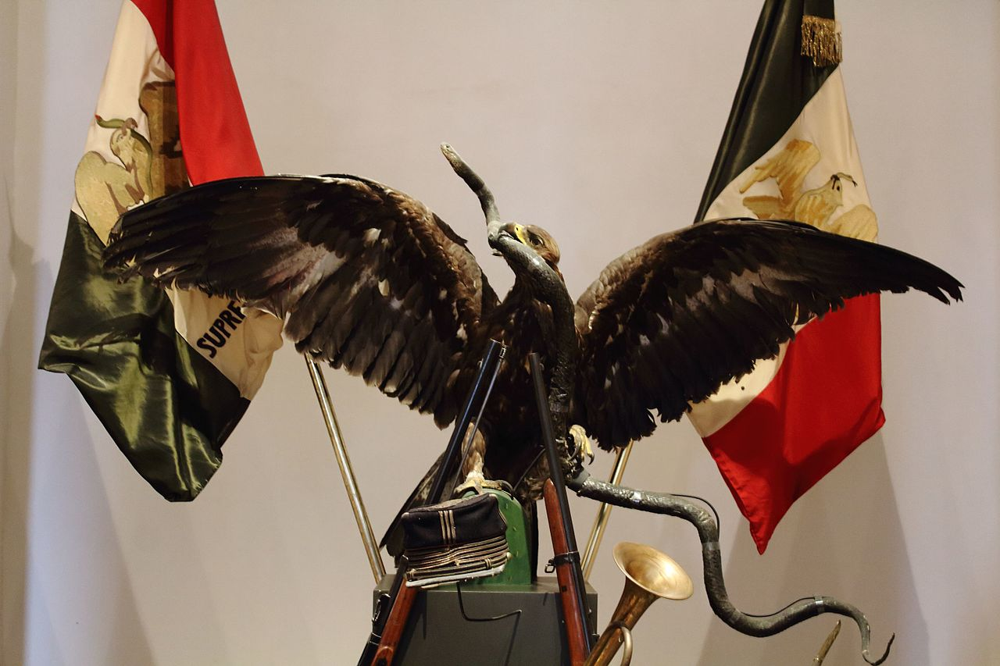
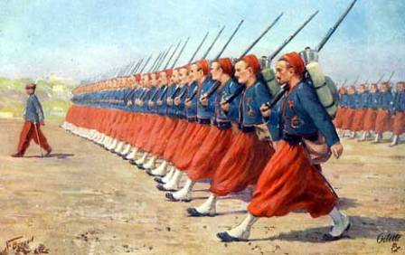
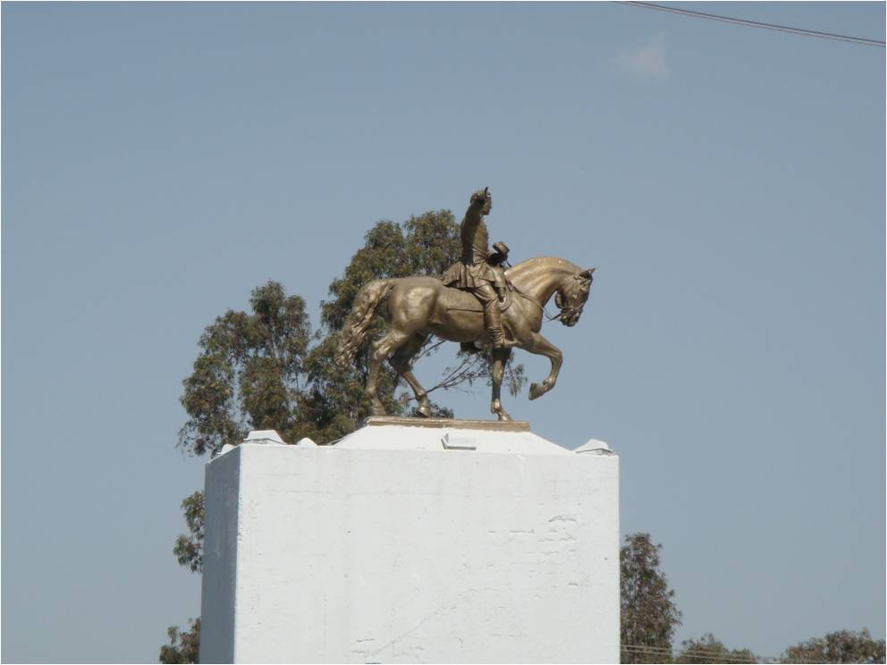
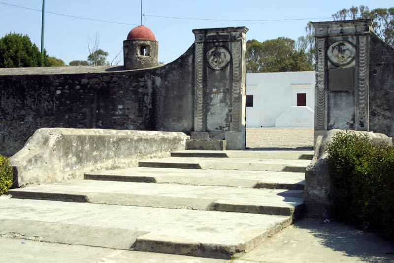
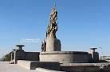
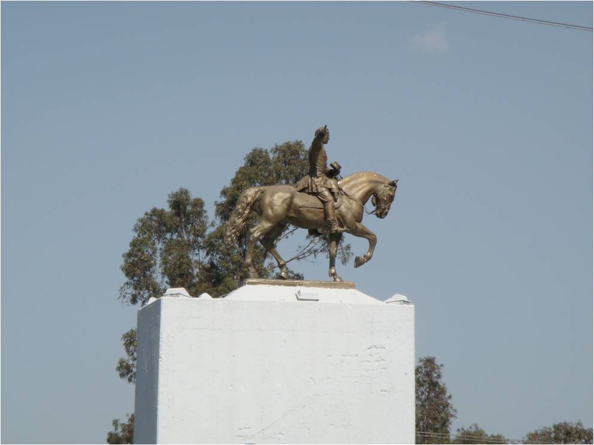
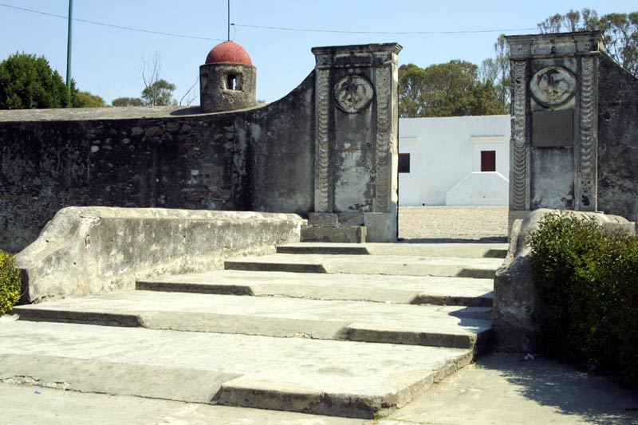
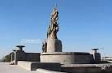

Batalla 5 de mayo


 1
1 3
3 4
4

La Batalla de Atlixco tuvo lugar el 4 de mayo de 1862 en las inmediaciones de la Hacienda de las Traperas en Atlixco en el estado de Puebla, México, entre elementos del ejército mexicano de la república, al mando de los generales Antonio Carvajal y Tomás O'Horan contra las tropas al servicio del Segundo Imperio Mexicano comandadas por el general José María Cobos y de Leonardo Márquez, compuesta de soldados conservadores mexicanos en apoyo de envío de refuerzos para llevar a cabo la Batalla de Puebla, durante la Segunda Intervención Francesa en México.1 Esta batalla culminó con una victoria republicana y debido a esto el grupo conservador de Márquez no pudo lograr su objetivo de auxiliar a las tropas francesas del Conde de Lorencez en la batalla de Puebla.
Asegurado el paso de Acultzingo, el 2 de mayo de 1862 la columna principal del ejército expedicionario francés salió de San Agustín del Palmar, en Veracruz, para cruzar la Sierra Madre Oriental y dirigirse hacia Puebla, paso obligado para llegar a la capital del país y que era además uno de los bastiones del Partido Conservador, donde esperaban ser recibidos "con una lluvia de rosas", como le aseguró Saligny a Napoleón III en una carta.4 El 3 de mayo por la noche, el general Zaragoza arribó a Puebla, dejando en su retaguardia una brigada de caballería para hostigar a los invasores. Los efectivos del Ejército de Oriente se organizaron por las calles desiertas de la ciudad, ya que la mayoría de la población era partidaria de la invasión.
Zaragoza estableció su cuartel a unos cuantos metros de la línea de batalla, donde estableció el plan para la defensa de la plaza (ver tabla superior), que consistió en concentrar los pertrechos en el sur y oriente de la ciudad, esperando evitar que los franceses alcanzaran al área urbana de Puebla.
El 4 de mayo, los exploradores mexicanos volvieron con noticias de que una columna de conservadores a caballo, al mando de Leonardo Márquez y José María Cobos, marchaba por la zona de Atlixco para unirse con las fuerzas de Lorencez en el ataque a Puebla. Zaragoza envió una brigada de 2000 hombres bajo el mando de Tomás O'Horán y Antonio Carbajal, con el fin de detenerlo, lo cual lograron. Aunque sus fuerzas habían disminuido, los mexicanos se prepararon para la defensa de Puebla. Contaban con dos baterías de artillería de batalla y dos de montaña, cubriendo los fuertes con 1200 hombres y formando a otros 3500 en cuatro columnas de infantería con una batería de batalla y una brigada de caballería por el lado del camino a Amozoc.
El 21 de mayo de 1862 el presidente Juárez publicó el decreto de condecoración a los vencedores de las batallas del 28 de abril en las Cumbres de Acultzingo y del 5 de mayo en Puebla, y ambas se consideraron victorias ante el ejército expedicionario francés.
El 30 de mayo se entregaron a los miembros del Ejército de Oriente los "diplomas de Concurrencia" a las mismas batallas, según lo estipulado en el artículo cuarto del mencionado decreto.
El 29 de noviembre Juárez viajó, acompañado por sus ministros de Guerra, Miguel Blanco Múzquiz, y de Relaciones Exteriores y Gobernación, Juan Antonio de la Fuente, a Puebla para una serie de ceremonias y reconocimientos a los defensores de la ciudad. Se reunió con González Ortega, y finalmente, el 4 de diciembre, en medio de una gran ceremonia en el Fuerte de Guadalupe, hizo entrega formal de las medallas a los vencedores de las batallas del 28 de abril y del 5 de mayo de ese año, y partió al día siguiente a la Ciudad de México. Asimismo, el 2 de marzo de 1863, en vísperas del inicio del Sitio de Puebla, se llevó a cabo una segunda ceremonia en Guadalupe, en la que entregó más medallas.
Con excepción del Grito de Dolores, la conmemoración de la Batalla de Puebla es la fecha más significativa del calendario cívico mexicano, al tratarse de una de las escasas victorias ante un ejército extranjero invasor. Simbólicamente, representa la consecución de una gran empresa por parte de los mexicanos, que puede conseguirse si se olvidan las divisiones y se sobreponen éstas a las carencias, como lo demuestra el hecho de que se consiguió la victoria, con valor y dedicación, pese a que se tenía todo en contra: inferioridad numérica y material, la moral disminuida por la tragedia de Chalchicomula, y la simpatía de algunos sectores de las élites y de la clase política hacia los invasores. A cambio, los republicanos respondieron con celeridad a las situaciones que la batalla iba planteando (movilizaron el grueso de sus efectivos del casco urbano de Puebla hacia los fuertes) y supieron sacar ventaja de los errores de los franceses. Semanas antes de la batalla, Juárez había declarado pena de muerte para los mexicanos que se unieran a los invasores, pero también una amnistía a los enemigos de la república en la guerra de Reforma si se unían a él para defender al país de la invasión. El caso más célebre es el del general conservador Miguel Negrete, quien abandonó al partido conservador y se puso a disposición de Zaragoza con la siguiente frase: "Yo tengo patria antes que partido."
El 5 de mayo es una fecha entrañable para los mexicanos; se celebra en las principales ciudades del país con desfiles y verbenas. Ese día se le toma protesta en todo el país a los jóvenes que cumplen el Servicio Militar Nacional.
Sin embargo, el recuerdo de la batalla no se agota en el protocolo. En algunos lugares del país se realizan fiestas populares en las que se recrea la batalla misma o algunos de sus aspectos, como en el caso del Peñón de los Baños, en la Ciudad de México, o en Huejotzingo, en Puebla; sitios en donde se da una peculiar fusión de elementos de carnaval con la fiesta cívica. Incluso en una celebración plenamente religiosa como son las Morismas de Bracho, en Zacatecas, que se hacen tradicionalmente el último fin de semana del mes de agosto, donde miles de personas representan combates entre moros y cristianos, aparecen participantes con uniformes tomados de la batalla de Puebla; por ejemplo, el contingente de los moros adoptó el uniforme de los zuavos franceses; asimismo, el ejército cristiano adoptó el uniforme del regimiento de zapadores, y las bandas de guerra cristianas llevan el uniforme mexicano utilizado el 5 de mayo. Ambas tropas simulan combates al son de marchas francesas.
En los Estados Unidos, el 5 de mayo es el "Día de la Herencia Latina", en la que se celebra la inmigración procedente de México. Ello ha dado pie a que se piense, erróneamente, que el aniversario de la batalla es el día de la Independencia de México.
En octubre de 1861, Francia, Inglaterra y España suscribieron la Convención de Londres, en la cual se comprometieron a enviar contingentes militares a México ya que este tenía una gran deuda de 80 millones de pesos, aproximadamente eran 69 millones para los ingleses, 9 millones para los españoles y 2 millones para Francia.
La alianza tripartita amenazó al presidente Benito Juarez con una invasión inminente si no se saldaba por completo las deudas que México tenía con los tres países europeos.
Juarez responde con un exhorto para lograr un arreglo amistoso, y los invitó a conferenciar. Sin embargo, sabía que había una guerra inminente y trató de proteger la Ciudad de México trasladando pertrechos y ordenó la fortificación de Puebla. Creo al Ejército de Oriente y el hombre que se designó en el mando fue el general Ignacio Zaragoza.
En un principio la Alianza Tripartita aceptó el llamado al diálogo de Benito Juarez y sus representantes se reunieron con Manuel Doblado, ministro de Relaciones Exteriores del gobierno mexicano, quien consiguió que Juan Prim, representante español, y Lord John Russell por Inglaterra se retiraran. A este acuerdo se le conoce como los Tratados Preliminares de la Soledad.
El 5 de marzo, cuando aún se realizaban las negociaciones de los Tratados de la Soledad, llegó a Veracruz un contingente militar francés bajo el mando de Charles Ferdinand Latrille, conde de Lorencez. A finales de abril, Lorencez desconoció los Tratados de Soledad y se puso en marcha, junto con sus efectivos, hacia Puebla, con el fin último de conquistar la Ciudad de México.

(Ignacio Zaragoza Seguin; Bahía del Espíritu Santo, Texas, 1829 - Puebla, 1862) Militar mexicano. De ideas progresistas, luchó contra la dictadura de Santa Anna y apoyó a Benito Juárez durante la Guerra de Reforma (1858-1960), contribuyendo decisivamente a la victoria final de los liberales. Dos años después, en los inicios de la invasión francesa de México, obtuvo una brillante victoria en la batalla de Puebla (5 de mayo de 1862), por la que es honrado como héroe nacional; lamentablemente, una enfermedad puso fin a su vida pocos meses después, a los treinta y tres años de edad.
Mas...
(José de la Cruz Porfirio Díaz Mori; Oaxaca, 1830 - París, 1915) Del nombre de este militar y estadista mexicano procede la designación de todo un periodo de la historia moderna de México: el Porfiriato (1876-1911). Y el mismo sufijo ya sugiere lo que fue: una férrea dictadura personalista y paternalista que reprimió toda oposición y anuló la libertad de prensa.
Mas...

Continuando con el recordatorio de algunos de los héroes de la gesta histórica del 5 de mayo de 1862 en Puebla, pocos mencionados en las brillantes ceremonias del 5 de mayo , sirva esta como un humilde homenaje, hoy que hemos celebrado el ciento cincuenta aniversario de la batalla del 5 de mayo de 1862, en Puebla.
Mas...

Militar mexicano, nacido en Tepeaca (Puebla) en 1824 y fallecido en Ciudad de México en 1897. Luchó contra los norteamericanos en 1847 y apoyo el Plan de Ayutla en 1855. Después del golpe de estado de Comonfort se pasó a las filas conservadoras. Miramón lo ascendió a general y participó en las batallas de Toluca y en Calpulalpan, con la que puso fin a la guerra de Reforma.
Mas...
 




